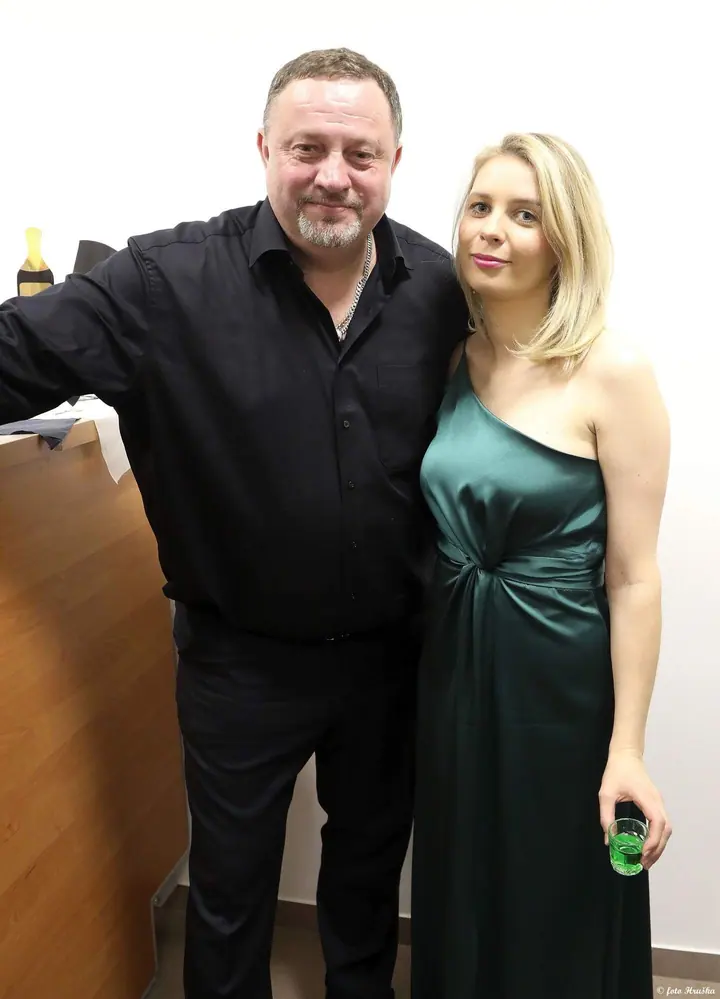
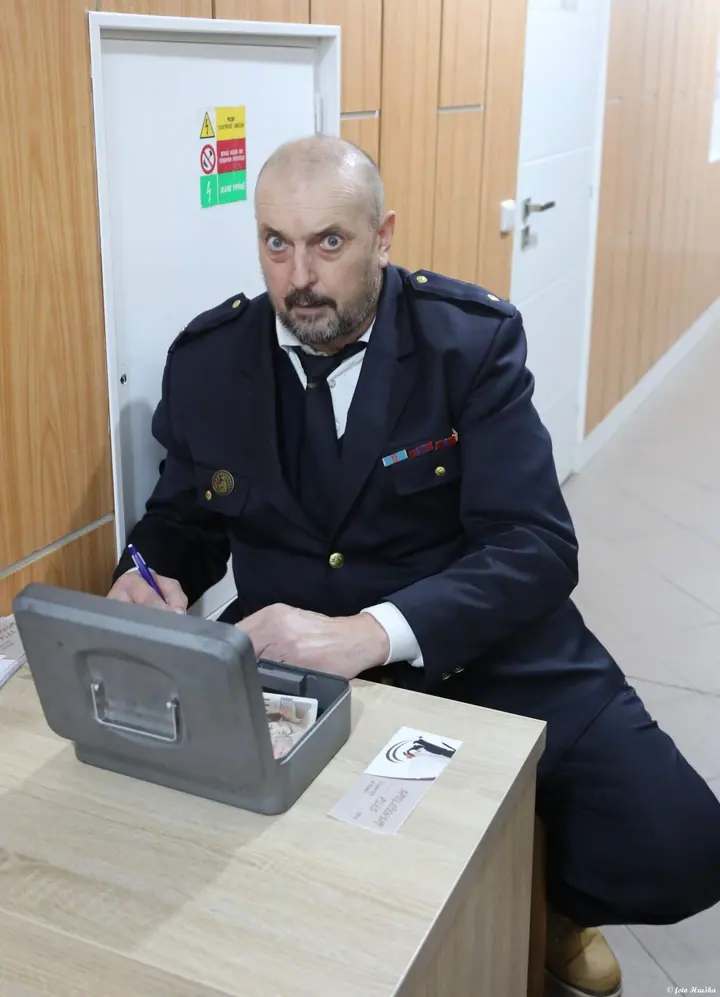
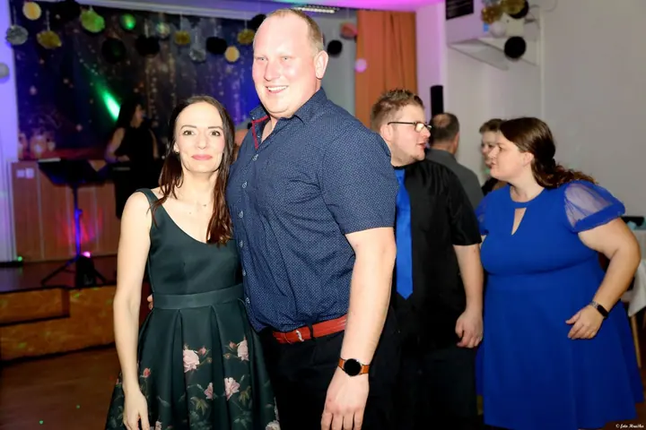
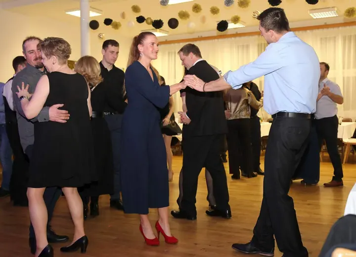

01 / 02
Plesy a zábavy
Fotím plesy a večírky od prvních hostů u stolů až po plný parket. Fotky ukazují tanec, přípitky i společné chvíle s přáteli.
Zeptat se na termín→



Plesy, zábavy a celý večer na fotkách
Zeptat se na termín →(01) Ahoj
Jmenuji se Hruška a pod značkou Foto Hruška fotím plesy , zábavy a kulturní večery . Na fotkách chci mít hlavně lidi, jak tančí, smějí se a připíjejí si s přáteli .
(02) Co fotím
01 / 02
Fotím plesy a večírky od prvních hostů u stolů až po plný parket. Fotky ukazují tanec, přípitky i společné chvíle s přáteli.
Zeptat se na termín→02 / 02
Fotím kapely, zpěváky a program večera, aby na fotkách nechyběla atmosféra ani lidé, kteří ji dělají.
Zeptat se na termín→(04) Postup
Od první zprávy po hotovou galerii.
Krok 1 z 4
Napíšete mi nebo zavoláte, jaký večer chystáte, kdy a kde se koná. Domluvíme se, co je pro vás při focení důležité.
Krok 2 z 4
Na akci fotím průběžně: hosty, program, kapelu i parket. Snažím se být nenápadný, aby si všichni užívali večer.
Krok 3 z 4
Po akci vyberu povedené snímky a upravím je, aby měly jednotný vzhled.
Krok 4 z 4
Hotové fotky dostanete jako album, které můžete sdílet s hosty.
Na parketu až do posledního tance
(05) Za objektivem
Nejvíc mě baví společenské akce. Plesy, zábavy a večery, kde hraje kapela a parket se plní. Snažím se být u všeho: u příchodu hostů, u stolů, na parketu i u baru.
Na Rajčeti mám pod jménem fotohruska přes deset tisíc fotek. Fotky z akcí zveřejňuji v albech, aby si je hosté mohli prohlédnout a najít se na nich.
Pokud chystáte ples nebo jinou akci a chcete, aby po ní zůstaly fotky, ozvěte se mi. Rád se domluvím na termínu i na tom, co je pro vás při focení důležité.
Hruška
Hruška · Fotograf plesů a společenských akcí
Hlavně plesy, zábavy a společenské a kulturní večery. Když chystáte něco jiného, napište mi a domluvíme se.
Rozsah focení si domluvíme předem podle programu akce a toho, které části večera chcete mít na fotkách.
Fotky z akcí zveřejňuji v online albech. Odkaz pak můžete poslat hostům nebo ho sdílet na webu a sociálních sítích.
Nejlépe přes kontaktní formulář nebo telefonicky. Pošlete mi datum, místo a typ akce a ozvu se vám zpátky.
(07) Kontakt
Napište pár vět o tom, co si představujete, a termín, který se vám hodí.
ticlouka@znojemskabeseda.cz